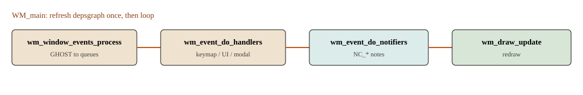

对应目录 windowmanager
一次用户动作 = Operator
快捷键、菜单、按钮、Python bpy.ops 最后都进 WM。真正改网格的是 editors 里的 exec / invoke / modal，通过 bContext 找到当前物体。

WM_main（windowmanager/intern/wm.cc）。进循环前先 wm_event_do_refresh_wm_and_depsgraph，避免未求值就跑 Operator。它解决什么
一次用户动作要可撤销、可快捷键、可被 Python 点名。WM 把这些收成 wmOperatorType。真正改网格的是 editors 的 exec / invoke / modal，通过 bContext 找当前物体。
注册
WM_operatortype_append（wm_operator_type.cc）创建一个 wmOperatorType，调用填充函数，再挂进表。网格侧：editors/space_api/spacetypes.cc → ED_operatortypes_mesh()（editors/mesh/mesh_ops.cc）→ 一串 MESH_OT_*。
例子：MESH_OT_subdivide
editors/mesh/editmesh_tools.cc。
void MESH_OT_subdivide(wmOperatorType *ot)
{
ot->idname = "MESH_OT_subdivide"; /* bpy.ops.mesh.subdivide */
ot->exec = edbm_subdivide_exec;
ot->poll = ED_operator_editmesh;
ot->flag = OPTYPE_REGISTER | OPTYPE_UNDO;
RNA_def_int(ot->srna, "number_cuts", ...);
}
/* exec 读上下文，不读全局 */
CTX_data_main / CTX_data_scene / CTX_data_view_layer
BKE_view_layer_array_from_objects_in_edit_mode_unique_data
BKE_editmesh_from_object -> BM_mesh_esubdivide
EDBM_update(mesh, params)
ED_operator_editmesh（editors/screen/screen_ops.cc）：CTX_data_edit_object 必须是带 BMEditMesh 的网格。Poll 失败则快捷键静默无效。
调用路径
- Keymap：
wm_event_do_handlers→wm_eventmatch→wm_handler_operator_call。 - 按钮：
WM_operator_name_call→wm_operator_call_internal→wm_operator_invoke。 wm_operator_invoke：poll→ 有 event 且有invoke则 modal，否则exec。结束且OPERATOR_FINISHED→wm_operator_finished。
G/R/S 这类是 modal（transform）。细分通常是 exec 一次做完。
bContext 是什么
blenkernel/intern/context.cc：当前 window / screen / area / region，加上按名字查的数据（edit_object、mesh）。Operator 签名固定为 (bContext *C, wmOperator *op)，避免全局「当前网格」指针。
和邻居的边界
| 阶段 | 谁做 | 失败会怎样 |
|---|---|---|
poll | 如 ED_operator_editmesh | 快捷键静默无效 |
invoke / modal | 需要拖拽的工具 | 没 event 则退回 exec |
exec | 一次做完的网格命令 | 返回未完成则不推 undo |
设计选择
进 WM_main 循环前先 refresh depsgraph，避免未求值就跑 Operator。
常见误解
WM 不拥有网格算法。它只调度；BM_mesh_esubdivide 在 editors / bmesh。
源码符号
WM_operatortype_append · wm_operator_invoke · windowmanager · Q133
keymap 存储见 wm_keymap.cc。内置 WM_OT_* 在 wm_operators.cc。